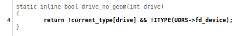
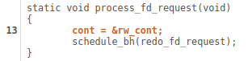
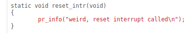
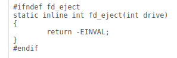

Syzkaller 介绍#
syzkaller 是一个基于覆盖引导（coverage-guided），能够对内核进行 fuzz 的白盒测试工具。syzkaller 本身支持多种系统调用，但是针对驱动进行 fuzz，主要关注 open、read、write、ioctl、mmap。它支持Akaros, FreeBSD, Fuchsia, gVisor, Linux, NetBSD, OpenBSD, Windows，Darwin等操作系统内核
覆盖引导：通过向目标程序插桩，记录程序执行路径和中间执行状态等，将这些信息反馈给fuzzer，然后通过不断修改输入，使得程序执行更多的路径，从而发现潜在的问题
运行SyzKaller所需条件#
内核源码 -> cc编译 -> 内核镜像
syzkaller源码 -> go编译 -> syzkaller可执行文件（syz-manager等）
qemu虚拟机
系统调用描述文件（syscall description）
配置文件（config file）
SyzKaller Architecture and Workflow#

SyzKaller的工作流程如上图所示。
syz-manager：运行在host上
负责调度fuzz任务，包括启动fuzz任务，监控fuzz任务，收集fuzz结果
负责fuzz过程：包括输入生成，变异，最小化等
持久化存储corpus和crash
syz-executor：运行在guest上
syz-manager 会开启 syz-executor 进程（每一个VM中开启一个syz-executor），它会使用PRC（远过程调用）于syz-manager通信，接收来自syz-manager的指令，执行fuzz任务，并将结果返回给syz-manager。
为了执行程序，syz-executor会启动临时子进程。每个临时子进程执行一个输入（一系列系统调用）。它被设计得尽可能简单（为了不干扰模糊测试过程），用c++编写，编译为静态二进制文件，使用共享内存进行通信。
Syscall Descriptions#
syz-manager 基于系统调用描述文件（syscall descriptions）生成输入，输入就是一个系统调用序列。系统调用描述文件定义了系统调用的参数类型，参数个数，参数值范围等。
一个系统调用序列长下面这种样子：
open(file filename, flags flags[open_flags], mode flags[open_mode]) fd
read(fd fd, buf buffer[out], count len[buf])
close(fd fd)
open_mode = S_IRUSR, S_IWUSR, S_IXUSR, S_IRGRP, S_IWGRP, S_IXGRP, S_IROTH, S_IWOTH, S_IXOTH
描述文件被放到sys/$OS/*.txt文件中，vscode提供了syz-langextension插件，能够实现语法高亮，可以方便的查看syscall描述。syzkaller会读取并转化这些描述，然后将它们用于种子的生成，变异，执行，最小化，序列化和反序列化一个程序。一个程序就是一系列的操作系统调用，每一个调用的每一个参数都有具体的值。以下就是一个程序的示例：
r0 = open(&(0x7f0000000000)="./file0", 0x3, 0x9)
read(r0, &(0x7f0000000000), 42)
close(r0)
在syzkaller实际修改程序的时候，它使用的是内存中的类似AST的表达方式，这中表达方式由Call和Arg组成，它们在prog/prog.go中定义。Call表示一个系统调用，Arg表示一个参数。Call和Arg都有一些字段，它们用于表示参数类型，参数值，参数值范围等。被用于analyze, generate, mutate,
minimize, validate等。
这种存储在内存中的结构可以使用代码transformed转化成为人类可以阅读的格式，也可以反过来。
除了以上两种格式之外，还有另一个binary representation， 这是一种更加轻便简洁的格式，它不包含太多的信息，但是它足够用于执行程序，被用于syz-executor的实际执行。
目前所有的syzcall描述都是手动编写的，虽然有一些工具如SyzDescribe等，可以自动生成一些描述，但是这些工具能力有限，生成的描述并不完整，也不一定准确。因此，现在的syscall描述主要还是依靠手动编写。
Coverage#
overview#
Syzkaller是一个coverage-guided的fuzzer。具体来说他用了LLVM的Sanitizer Coverage (tracing mode)和KCOV来收集覆盖情况。值得注意的是，现在gcc也是可以用Sanitizer Coverage的。
编译期间，编译器会向每一个Basic Block
或CFG edge中插入一段代码，这段代码就是一个覆盖点(Coverage Point)，
当程序执行到这个点时，就会记录下来。（其中覆盖点的粒度是Basic Block还是CFG edge与编译器有关。例如clang的粒度是CFG edge，
而gcc的粒度是Basic Block）。
覆盖点的插入是放在编译的中后期进行的，这个时候，编译器已经执行了很多的优化 Pass，
所以最后我们的覆盖点和源码联系并不紧密。比如，你可能会发现有一行代码被覆盖了，但是他的上一行没有被覆盖。
但是，覆盖率仍然提供了一个很有用的信息，可以让我们了解fuzzing的全局情况，但是我们还是要对其保持怀疑，不能太依赖。
Web Interface#
我们可以在syzkaller的web界面中查看覆盖率。进入到web界面之后，会看到面板中有一个coverage字段，点击该字段后面的数字， 会跳转到一个页面，这个页面就是覆盖率的页面。
从中我们就可以了解到fuzzing的全局情况，例如，哪些文件被覆盖到，覆盖率是多少，哪些文件没有被覆盖到。 我们还可以点击文件名，查看该文件的覆盖率情况。以pkeys.c为例：

该界面会展示pkeys.c的源码，并且用不同的颜色表示不同的覆盖率。
注意：我们的一行源码经过编译后，可能会被翻译成多条机器指令，每一条指令对应一个程序计数器（Program Counter，简称PC）, 这是一种处理器中的寄存器，它用于存储当前正在执行的指令的地址或指针。所以后面提到的与该行相关的PC值， 就是指该行源码对应的机器指令的PC值。
黑色：完全覆盖
所有与该行相关的PC值都被覆盖。左侧有一个数字，表示有多少个程序执行了与这行相关的PC值。 你可以点击那个数字，它会打开最后执行的程序。

橘色：有些覆盖有些没覆盖
有几个PC值与该行相关联，但不是所有这些都被执行。同样，源代码行的左边还有一个数字， 可以单击以打开触发相关PC值的最后一个程序。

深红色：弱未覆盖
函数（符号）这一行没有任何覆盖。也就是说，函数根本不会被执行。 请注意，如果编译器已经优化了某些符号，并使代码内联，那么与这一行相关联的符号就是代码被编译成的那个符号。 这使得有时很难弄清楚着色的含义。

红色：未覆盖
未覆盖行。函数（符号）执行这一行，并执行与这一行相关联的一个PC值。
灰色：未插桩
与代码行相关联的PC值不会被测量，或者源代码行根本不会生成代码。

syz-cover#
syzkaller提供了一个很好用的工具syz-cover， 用它可以根据未处理的覆盖数据（raw coverage data）生成一个覆盖情况报告。 使用方法可以参考coverage。
Crash Report#
syzkaller在运行过程中，如果发现程序崩溃，会生成一个crash report，然后将crash信息保存到workdir/crashes中。
该目录中包含了若干个子目录，每一个子目录都是一个唯一的crash类型。
每一个子目录中都有description文件，它存储了唯一的id，可以用来区分每一个crash，
同时目录中还存储了logN和reportN，每一对都是一个crash report。以下是crashes目录的示例：
- crashes/
- 6e512290efa36515a7a27e53623304d20d1c3e
- description
- log0
- report0
- log1
- report1
...
- 77c578906abe311d06227b9dc3bffa4c52676f
- description
- log0
- report0
...
logN和reportN是成对出现的，它们描述了同一个crash，在syzkaller中，一个crash类型的目录里最多会保存100对logN和reportN。
logN文件包含了syzkaller运行时的日志，以及Kernel的输出。这些log可以交给syz-repro工具，他能够进行crash定位以及最小化（crash location and minimization）。syz-execprog也是一个有用的工具，他能够通过这些日志进行crash人工定位（manual localization）。
reportN文件包含了处理后的以及符号化后的内核crash报告（比如，KASAN报告）。
在所有的crash类型中，有3中类型比较特别，这三类crash通常不会被记录到report中，如果遇到了可能是syzkaller的bug。
no output from test machine: 虚拟机完全没有输出。lost connection to test machine: 与虚拟机的ssh连接意外断开。test machine is not executing programs: 虚拟机还在运行，但是很久没有执行测试程序了
Reproducing Crashes#
尽管syzkaller可以自动地重现bug，但是这个重现不够完美，所以syzkaller提供了一些工具， 能够让用户手动执行程序，重现bug。
在fuzzing过程中，syzkaller在 workdir/crashes 目录中创建的崩溃日志包含了崩溃前执行的程序。在并行执行模式下（当syz-manager配置中的 procs 参数设置为大于1的值时），导致崩溃的程序不一定立即出现在崩溃之前；有问题的程序可能在日志中的某个地方。有两个工具可以帮助我们识别并最小化导致崩溃的程序：tools/syz-execprog 和 tools/syz-prog2c。
tools/syz-execprog 会执行一个syzkaller的种子（一个包含了一系列syscall的程序）。
以下命令是syz-execprog的用法：
./syz-execprog -executor=./syz-executor -repeat=0 -procs=16 -cover=0 crash-log
一旦你得到一个能够导致crash的种子程序，你可以尝试进一步地最小化它，比如删除程序中的一些无关syscall。最小化之后的程序还应该去执行一下，看看它能否触发crash。 运行的命令可以参考：
./syz-execprog -threaded=0 -collide=0
确定没有问题了，就可以使用syz-prog2c工具，将种子程序转化为一个可以执行的c语言程序。只要之前的种子程序在syz-execprog使用了参数-threaded/collide=0运行都能够复现crash，
那么转化后得到的c语言程序也能够稳定地复现。